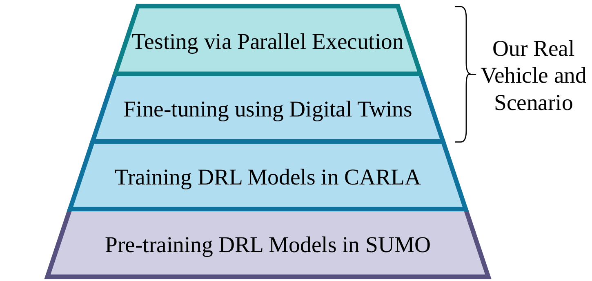
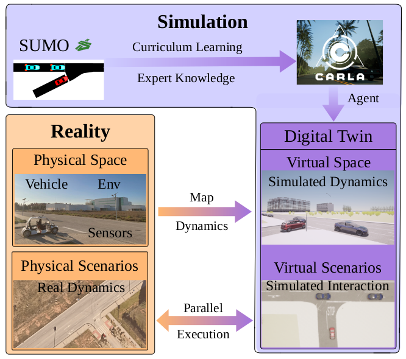
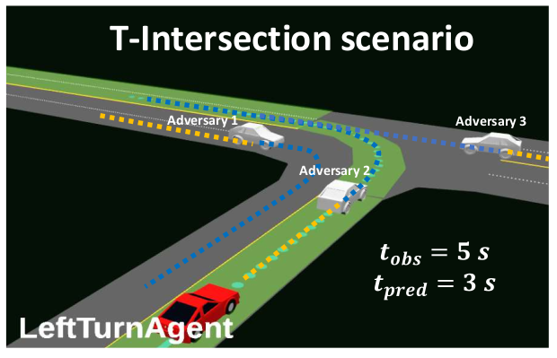
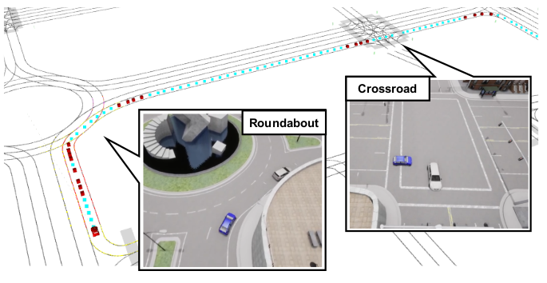
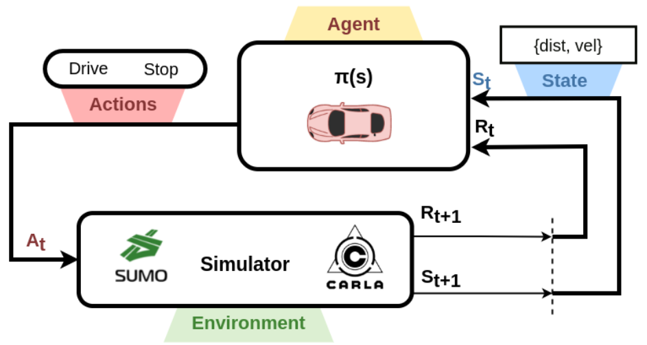
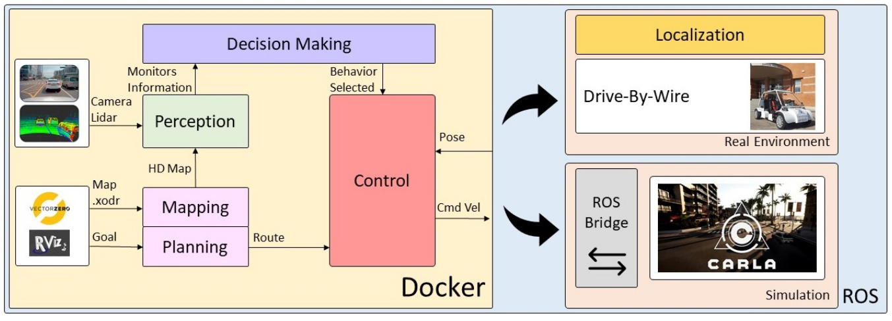
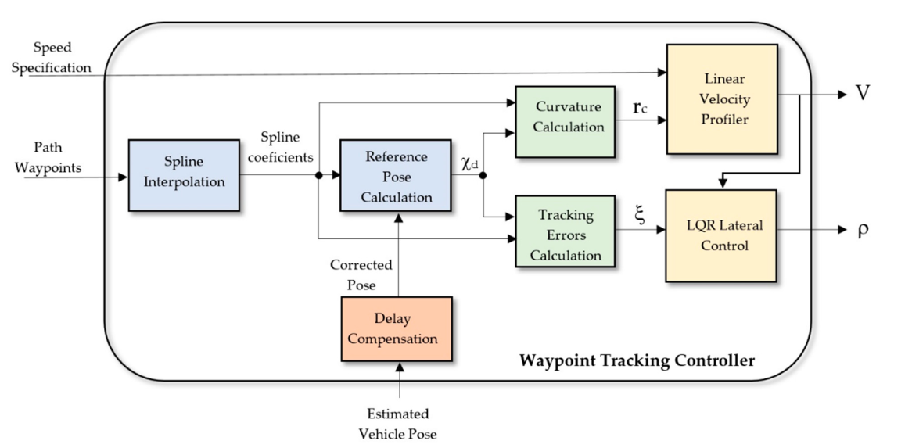

Publications

In submission in IEEE Transactions on Intelligent Transportation Systems 2024 | Co-Authors: Rodrigo Gutiérrez-Moreno, Rafael Barea, Elena López-Guillén, Felipe Arango and Luis M. Bergasa

In submission in Sensors 2024 | Co-Authors: Rodrigo Gutiérrez-Moreno, Rafael Barea, Elena López-Guillén, Felipe Arango and Luis M. Bergasa

35th IEEE Intelligent Vehicles Symposium 2024 | Co-Authors: Rodrigo Gutiérrez-Moreno, Rafael Barea, Elena López-Guillén, Felipe Arango, Pedro Revenga and Luis M. Bergasa

IEEE 26th International Conference on Intelligent Transportation Systems 2023 | Co-Authors: Rodrigo Gutiérrez-Moreno, Carlos Gómez-Huelamo, Rafael Barea, Elena López-Guillén, Felipe Arango and Luis M. Bergasa

34th IEEE Intelligent Vehicles Symposium 2023 | Co-Authors: Rodrigo Gutiérrez-Moreno, Rafael Barea, Elena López-Guillén, Felipe Arango, Navil Abdeselam and Luis M. Bergasa

Sensors 2022 | Co-Authors: Rodrigo Gutiérrez-Moreno, Rafael Barea, Elena López-Guillén, Javier Araluce and Luis M. Bergasa

32nd IEEE Intelligent Vehicles Symposium 2021 | Co-Authors: Rodrigo Gutiérrez-Moreno, Felipe Arango, Carlos Gómez-Huelamo, Luis M. Bergasa, Rafael Barea and Javier Araluce

Sensors 2020 | Co-Authors: Rodrigo Gutiérrez-Moreno, Elena López-Guillén, Luis M. Bergasa, Rafael Barea, Óscar Pérez, Carlos Gómez-Huélamo, Felipe Arango, Javier del Egido and Joaquín López-Fernández